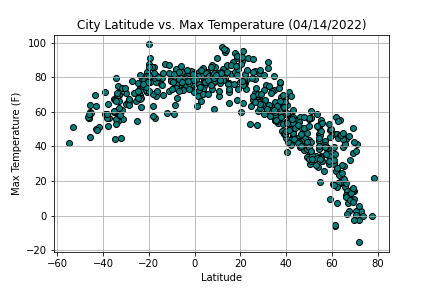

Overview:

This page explores the results of a previous class activity regarding various weather results including temperature, humidity, cloudiness, and wind speed..
This website assembles the data and findings to provide further insight and comparative analysis of these results.
Visualizations


© Copyright Connor Grant 2022